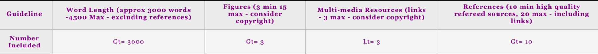

I feel More and more industries are connected with information technology, and the scope of computer technology is also increasingly extensive, which makes network security particularly important. For example, as a user, when I need to enter a game, some games require my personal information. Due to the violence in the game, it is necessary to confirm whether the player is over 18 years old to play the game. At this time, users need to be self-disciplined. The security contract will also be displayed on the interface at this time. I feel a little insecure. Whether the so-called security contract is useful and whether outsiders have the authority to clear and modify your information, especially when you need to pay. I think a sound legal contract can better protect the relationship between link users and network operators. In conclusion, I want to say that it is not 100% secure on the internet, but we can reduce the risk by creating a better network environment, such as telling young people of the negative impact of the network earlier, and how to confirm whether the network is malicious and build a good network cognition. more importantly to improve better cybersecurity to use. In addition, Operators should use better network security technicians but constantly update their vulnerabilities and ensure that all personnel who have taken over the procedures have good ethics and do not leak from the inside.
Based on that kind of situation, we decide to use cybersecurity as our topic. In this grouping activity, we mainly understand the application scope of network security. The goal of computer security is to protect assets and information. Therefore, we introduced these possible problems and explained how to protect them. In practice, I mainly helped to check some information and put it in the team chat, and made some PPT content. I am also nervous about the speech. So my team members are responsible for speaking. I don’t know how to use GitHub, so my group mate made the main web. I just send the documents we need to them. I recommend that we should have more meeting times so we can finish our work earlier.
I believe the ethics of cybersecurity tends to be relatively positive, due to the fact that it mainly acts as a counter to unethical issues online, but that's not to say that there are none. The main key ethical issue is confidentiality. By nature cyber security specialists handle tons of personal and private information, so potential leaks of this information can lead to serious backlash on a person, people, companies and maybe even greater. Another ethical issue with cyber security is the potential for a big brother situation, where everything is monitored because the security has evolved beyond just personal web browsing and keeping your accounts safe, and could be implemented into society as a countermeasure for rebellion or anarchy by a government. This is a scary thing to think about and something we as people need to keep in mind as we progress as one.
During this project I have learnt several things including the importance of communication within a group as well as time management. Working in a group is not something I am entirely used to in a university environment, and especially not with people I am not familiar with. This is obviously an important skill to learn throughout my life because it will be useful in order to find a job and just with general life situations. But obviously this came with its ups and downs. My team was very warm and everyone had good energy so I felt it was easy to communicate with them. I also felt we each had our own individual strengths that lifted us and made us a better team when put together. Johnny seemed very extroverted so he was able to take the lead for things like our presentations, Jiaqi was very good at researching topics so that helped us a lot too, and I felt I was a good mix between the two. There were also a few negative things that occurred during this project. The main one being time management and communication when we were not in person to a degree. As students, I felt we had the mindset of just leaving it and doing it later as a lot of university students do. This is a lesson I am going to try and learn from because it brought a lot of stress on me which I don't want to happen again. As I mentioned earlier, online communication was not great either. We were all attempting to do work but I believe if we communicated more, this task would not have been so difficult, resulting in us finishing it faster, as well as completing it at a higher level. I have already slightly touched on what I would have done differently but again, the main things I would want to improve on if I were to do this assessment again is dedicating more time to it earlier on so that I wouldn't be in a rush to finish it by the deadline. I also think communication is key, so maybe setting up some more real life meetups where we could discuss with each other what we needed to do would be a good idea.
Meeting for “THE IMPORTANCE OF CYBERSECURITY IN TODAY'S SOCIETY”
A Meeting of conversation about the website, was held on june 6,2021, at the microsoft team at 1:39 pm.
Voice chat:Danny, Jacky
Chat: Johnny
Members Absent: None
A motion to approve the minutes of the previous june 6 th meeting was made by Jacky and seconded by Danny.
there being no further business to come before the meeting, the meeting was adjourned at 3:45 p.m
06/06/2021Due Date: 04/05/2021 Midnight
(Team coordinator to email team name and link to your TA)
Team Name: 1103
Team Coordinator/Leader:
Danny's main role(s) in this assignment will be Presenter, Website Editor as well as key researcher.
Johnny's main role(s) will be the Project Manager, Presenter Website Editor and Reference Manager.
Jiaqi's main role(s) will be the Management of the Website (CSS), Presenter and she will also help as a Key Researcher.